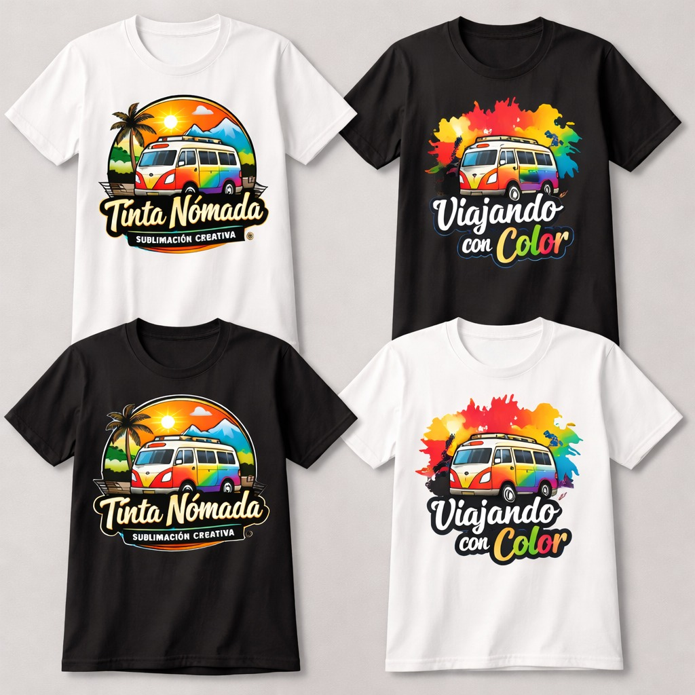
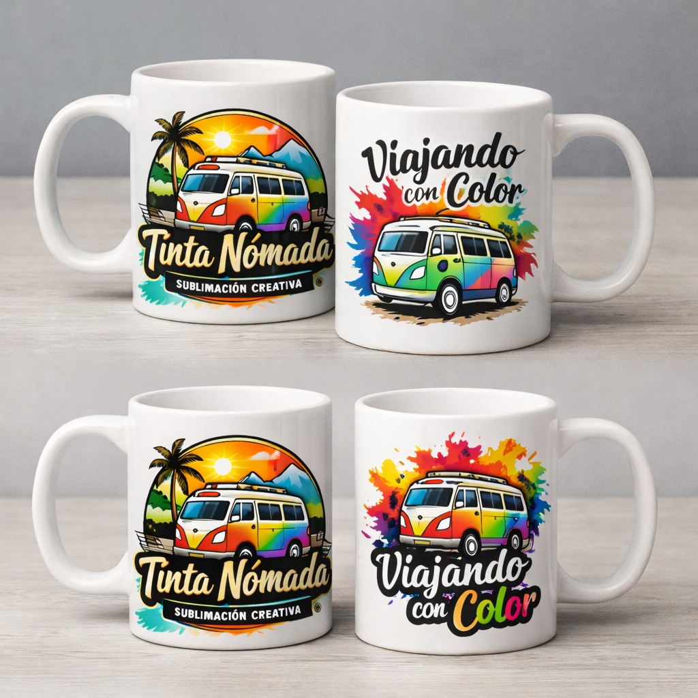
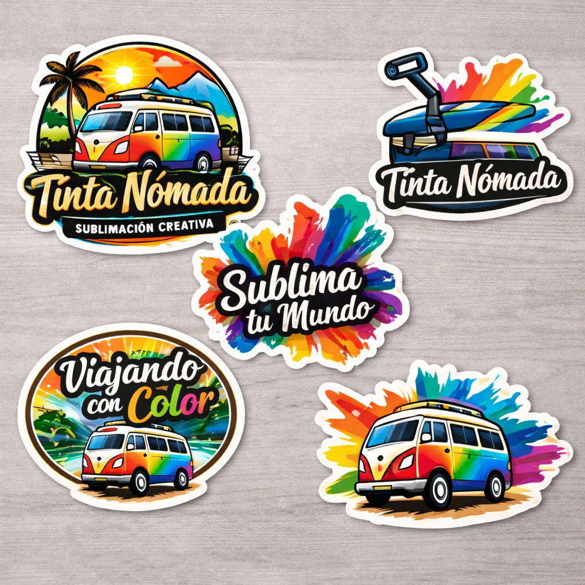

La Sublimation Printing es una técnica de impresión que permite transferir diseños personalizados a diferentes productos mediante calor. Este proceso logra que las imágenes queden integradas en el material, obteniendo colores vivos, alta calidad y gran durabilidad.
Permiten llevar diseños únicos y originales en una prenda de uso cotidiano.
Este tipo de playeras es ideal para crear ropa personalizada para eventos, equipos deportivos, empresas, campañas publicitarias o grupos de amigos. Los clientes pueden elegir diferentes tipos de diseños como ilustraciones, frases, logotipos o fotografías.

Son uno de los productos más populares dentro de la sublimación. Utilizando Sublimation Printing, se pueden transferir imágenes, fotografías, frases o ilustraciones directamente sobre la superficie de la taza mediante calor y presión.
Muy utilizadas por empresas que desean promocionar su marca, ya que pueden incluir logotipos, eslóganes o diseños representativos del negocio. Además de su valor práctico, una taza personalizada puede convertirse en un objeto significativo, ya que puede contener recuerdos, fotografías o mensajes especiales para la persona que la recibe.

Son una excelente forma de expresar creatividad, decorar objetos o promocionar una marca o negocio. Mediante el proceso de Sublimation Printing, es posible transferir diseños con colores vivos y gran nivel de detalle, lo que permite crear stickers atractivos y de alta calidad.
Además, los stickers son muy populares para campañas promocionales, eventos especiales, recuerdos de fiestas o simplemente para decorar objetos personales. Gracias a la sublimación, los diseños mantienen su color y definición, lo que permite obtener un resultado visual llamativo y duradero.
